Image Regocnition Helper
Project made by:
- Valentin Bălțătescu
Abstract
Image Recognition Helper is a website that uses different Machine Learning algorithms in order to recognize objects in different images. Each of them performing better for different kinds of scenarios. This was initially mainly for theoretical purposes but using different HCI designs and method this was put in a more user friendly format.
1.Introduction
1.1 Report details
This document is the report of the Image Recognition Helper application. The report is based on the template IEEE System Requirements Specification Template in Scholarly HTML format.
1.2 Purpose and scope of the project
The theme is Machine Learning and Image Recognition, but it has been translated into a more user-friendly and easy-to-use environment for any type of user who will come across this site. This is done based on the principles of Human Computer Interaction.
2.Overview
2.1 Application features
The application provides the following features:
- page navigation;
- uploading images;
- running the implemented algorithms;
- displaying results after running.
2.2 User classes
This project aims to target people with knowledge in computer science and engineering who have more technical thinking and can understand the steps behind the algorithms, but also any other type of user with minimal knowledge of using sites that can solve their problem. with the help of this project.
2.3 Using HCI priciples
To solve the transformation from a theoretical project to one intended for use by users. Thus, methods such as sketches, wireframes and prototypes were used to create the interface from idea level to the best possible implementation to meet the needs of users. Also, specific principles were used for an easy use, the fast learning of the offered functionalities and a pleasant experience.
3.Creating the website UI/UX
3.1 Project design
Sketches
The idea of creating the interface for the application must be put in a physical form, this being initially realized with the help of sketches. These have the role of giving an initial shape to the idea. In my case the sketches are for the most important pages: Home, Algorithm and Help. For Algorithm you only need one sketch because the other two will be on the same principle what differs is only information that is in them.
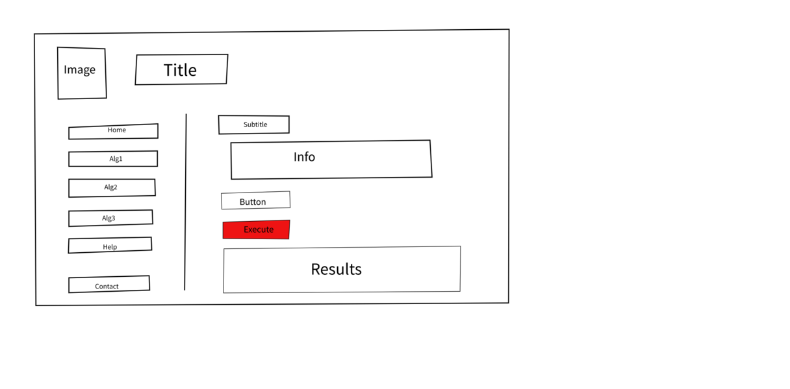Wireframes
Wireframes were used to see a state as close as possible to the final position of the items within the page. Also at this step is the addition of new elements such as icons, colors and repositioning of the initial elements in the sketches.
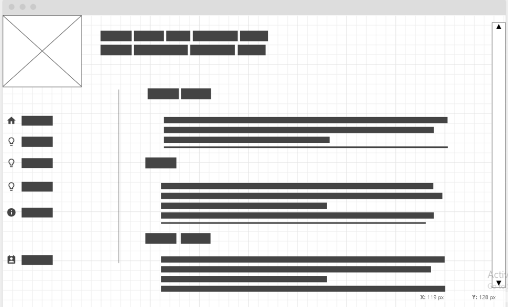 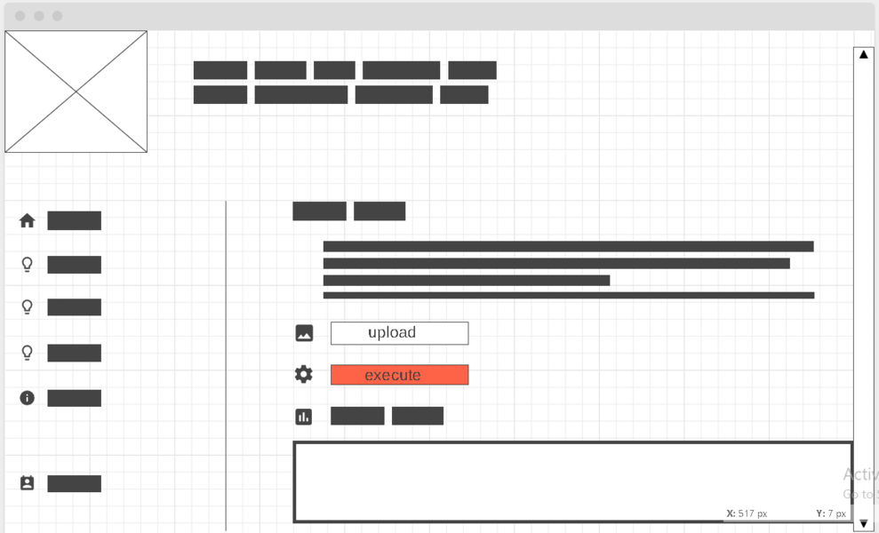 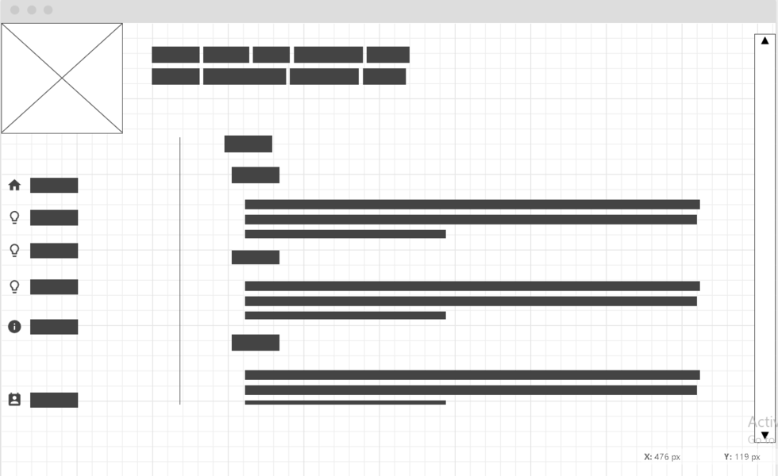Prototypes
Finally we have some prototypes that represent a final form of the product. In addition to the added wireframes, they also include new things like images, background, text as information, title, button name and subtitles. The last thing that remains is the effective implementation of these prototypes if they meet the required standards and the addition of information that will reach the final product.
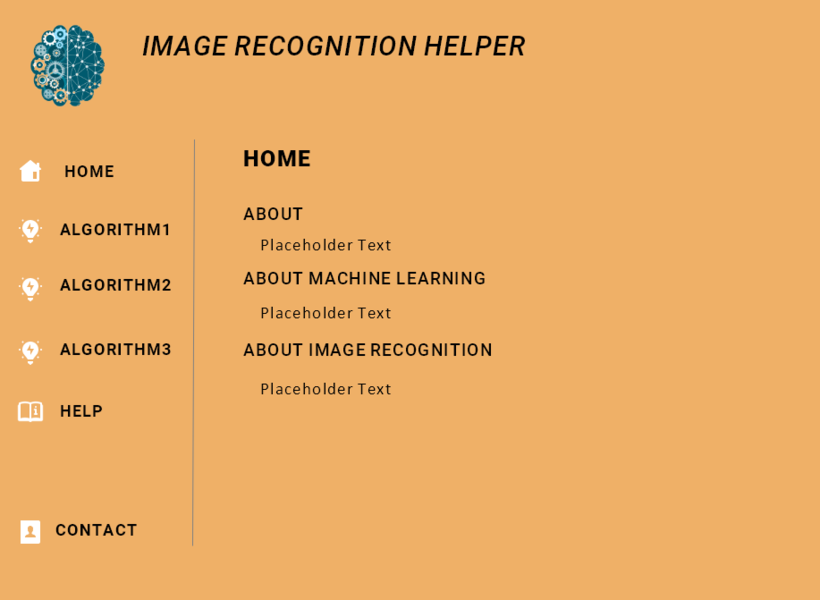 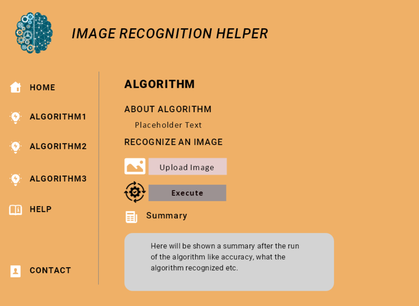 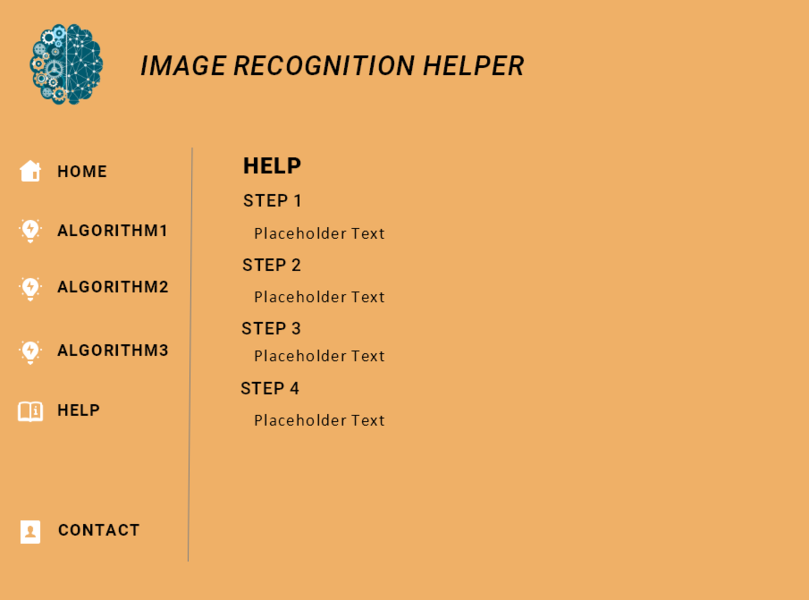However, even if the creation of these auxiliaries seems to be something that can be easily achieved in each stage, it is necessary to take into account certain principles and techniques to obtain a final product that satisfies both the UI and the UX.
The initial idea with which the project started was to create something that would put the user at the center for a more satisfying experience. Thus, usability has been carefully implemented throughout the design. Thus the simple UI favors the easy learning of the pages and what is the purpose of each one and at the same time it will know at each connection what role each page has and where to look for the information it wants, efficiency achieved by a very small number of clicks for him to do what he wants.
The grid has been divided into two: a smaller part for the menu part and a larger part in which the information and other implementations are located, so they are well delimited and there will be no problem of confusion between the two. For the part of the menu for a more pleasant experience, some suggestive icons have been added so that the user has a first idea about the content on those pages, and on the other side there are always suggestive subtitles that have the same role.
The chromatics chosen for the pages are as simple as possible with a pleasant color that is not too strong that blends well with the white in the icons and the other colors in the text and buttons.
Also, a vocabulary as easy as possible is used, the titles of the pages being suggestive, and the buttons have the simplest possible names that do the actual action (upload, execute). This way the user will not get lost in the menu or when using the page functions.
But in the case of someone that doesn't know how to use a site there is a special page for generic helping that tells the exact steps to achieve want you want.
If the user does not enter a correct file in the "upload" part, the site will give a specific error message to warn him, thus avoiding the scenario in which the user does not know what went wrong and why not get the desired result while avoiding frustration.
3.2 QOC (Questions, Options, Criteria)
- questions regarding design key issues
- possible options to response to each question
- evaluation criteria – e.g., ergonomics, accessibility,preferred interaction method,… – concerning every option
Example 1
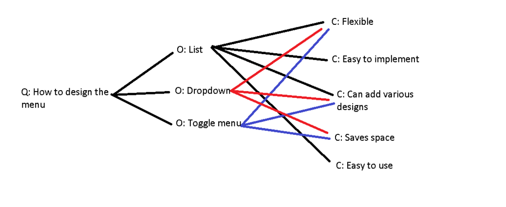Here the question is "How to design the menu?" with two options. In the final product I chose to use a vertical list because it satisfies most of the criterias and it is the most newbie friendly UI cause it is easy to understand and to use. But also easy to implement which makes everything cheaper.
Example 2
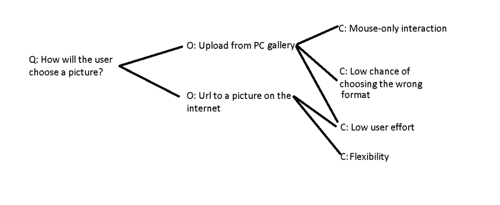If we want to use the features of the site we have to somehow upload the images to the website so it can analyze them and give us results. We have to options to choose from our personal gallery or from the internet. I chose the first option because it is the most safe between the two. This way there will not be problems regarding the format of the image as in using an URL the user may link something totally different and might have trouble finding the correct format. This way the user will not face troubles using the core features of the website.
Example 3
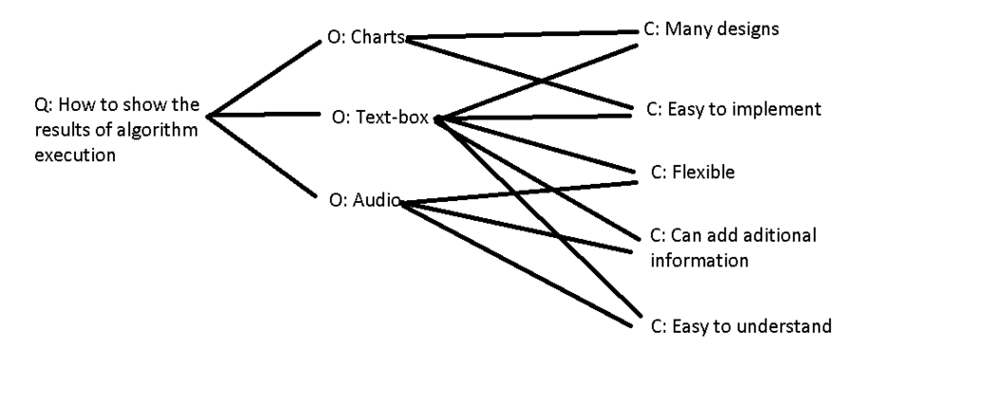In the picture above we can see we have three options to choose from and the one that ended in the product was the Text-Box one. Once again this option checks most the criterias but the main strenght of it is that is easy to implement but the most flexible one cause we can style this in a way that is pleasant and we can share as much data as we want caues we have no restrictions about this method.
3.3 Users' Experience
Direct link
 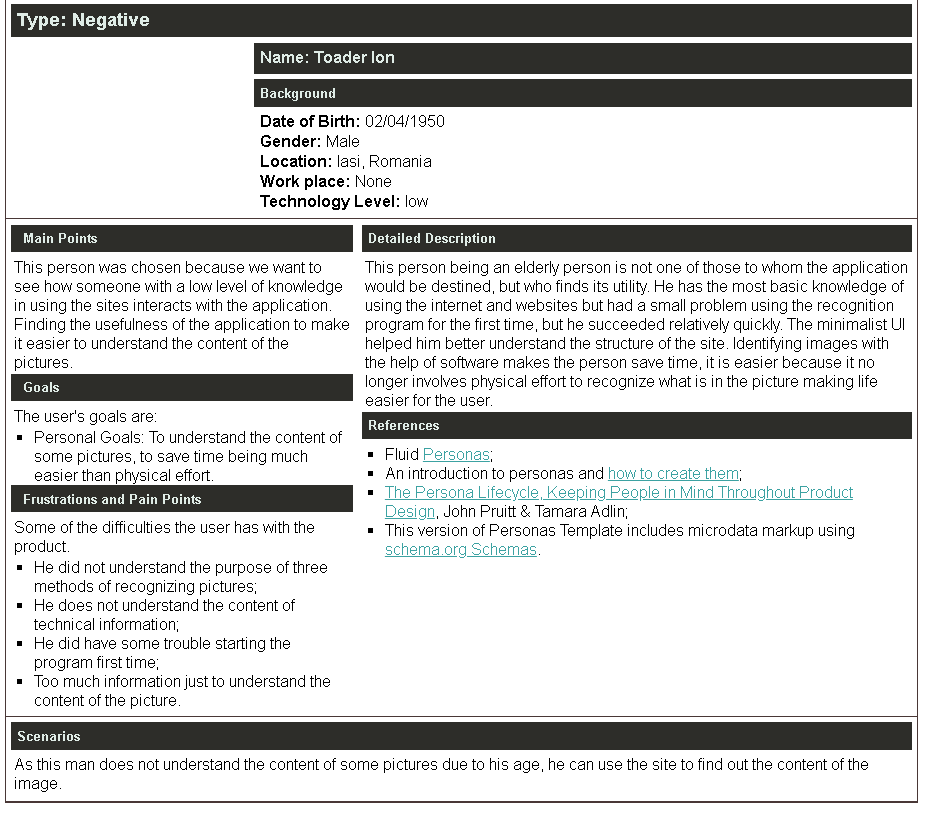
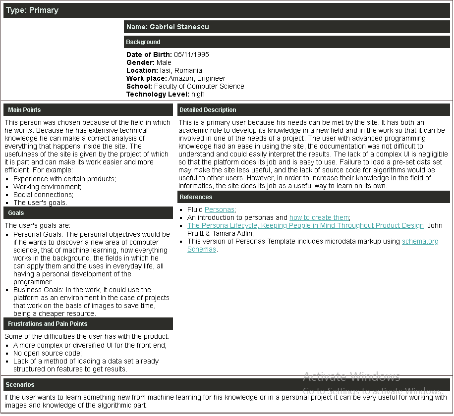
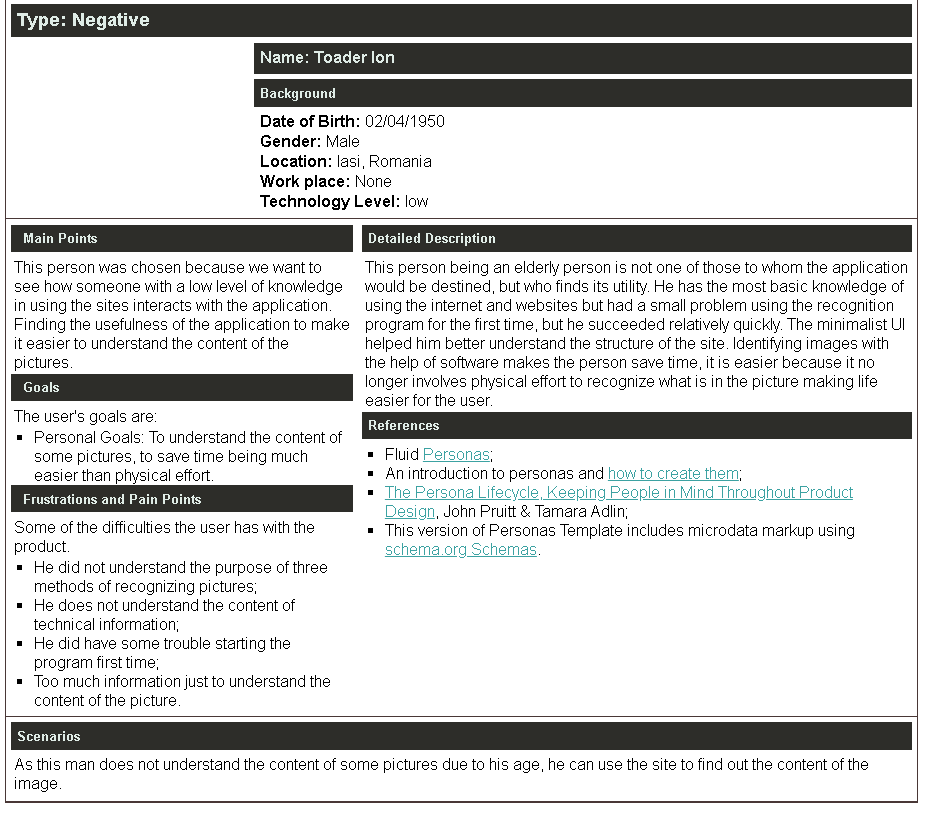
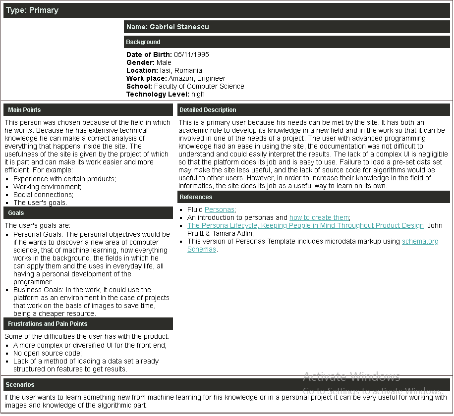
The general idea following the reports of the chosen users shows that the product has reached its desired purpose. In addition to the technical side of image identification, the idea of UI / UX has also been achieved. Despite some inconveniences related to the type of information presented or the choice of templates for graphics and design, the site was easy to use, did not create major problems in use, was user friendly and achieved its goals at the beginning of creating this project.